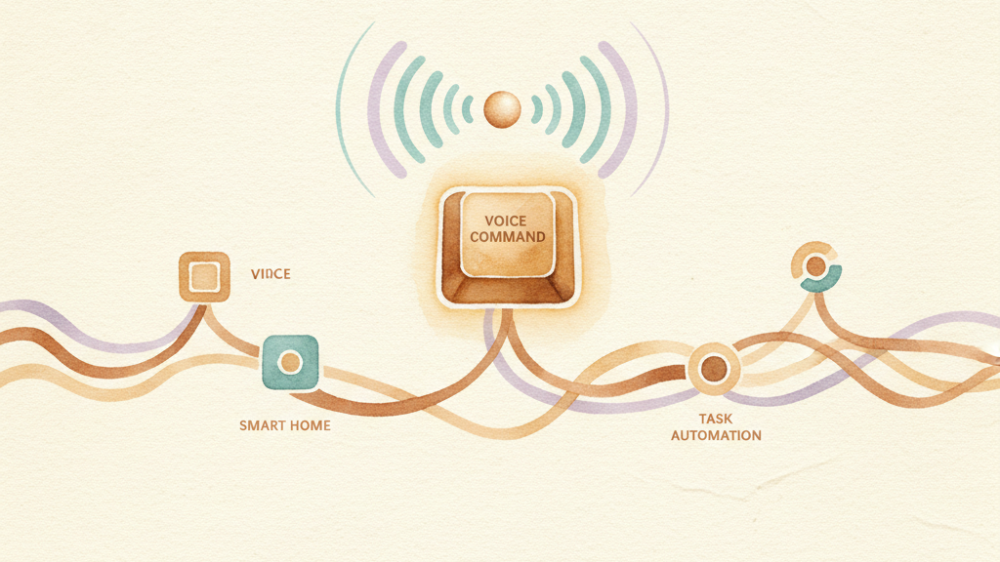

KeyPath works with Siri and the Shortcuts app. Ask what layer you're on, start or stop the service, or trigger any KeyPath action — by voice or as part of an automation.
Ask Siri which keyboard layer is active right now.
"Hey Siri, what layer am I on in KeyPath?"
Siri responds with the layer name (e.g., "base", "nav", "window").
Control the KeyPath remapping service without opening the app.
"Hey Siri, start KeyPath" "Hey Siri, stop KeyPath" "Hey Siri, restart KeyPath"
Trigger any KeyPath action through Siri.
"Hey Siri, send action to KeyPath"
Siri will ask for the action URI (e.g., keypath://launch/Obsidian).
KeyPath actions appear in the Shortcuts app under "KeyPath" in the action picker. You can combine them with any other Shortcut action.
Returns the active layer as text. Use this with an "If" action to build layer-conditional automations:
Example: If the current layer is "work", open your work apps.
Start, stop, or restart the remapping service. Useful for scheduled automations:
Example: Create a Time of Day automation to stop KeyPath at 6 PM and start it at 9 AM.
Dispatch any keypath:// action URI. This gives Shortcuts access to everything KeyPath can do:
keypath://launch/Terminal — launch an appkeypath://system/mission-control — trigger Mission Controlkeypath://window/left — snap window to left halfkeypath://notify?title=Done&body=Build complete — show a notificationSee the Action URI Reference for the full list.